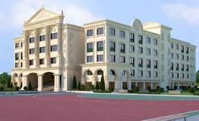

मेरी Shiksha
Pre-school
The place where I Started my education! People say it's the best nursery school in Surat.😁 I don't remeber anything , to tell you about it 😅, but you can see some pictures by clicking on the hill's Nursery image.
Elementry and High School
Radiant! The school from which I Started 1st standard and bid farewell from. Many memories , many mischeifs , i miss it a lot!
As far I remember, 7th Standard was the time from where my mischiefs began!😂😁 Most of the time, we were out of the class, 🤪, got beaten harshly, and all outcomes one can get out of it.
And due to one big carryon, I almost might have gotten a suspension letter, but thanks to my acting skills(😉), bach gaye
NTSE,JEE jaise sabdh yaha aake pata chale. Varna hamari school ko alag duniya me hi thi.
11th -12th me kaafi hurdles bhi aaye jab physics and maths faculty mid me left kar gye. 4 mahino baad ek badhiya physics ke sir mile jinhone nayya paar kara di.
Iss tarah school-life bhi end ho gyi aur farewell ka din aa gya.
College
Aha! Yaha toh 6 mahine bhi nhi bitaye ki vapis ghar aa gye! par vo 6 mahine bhi bahut mst nikle!!
MNIT ka safar 4 August 2019 se shuru hua , jaha mere bahut naye dost bane. Yaha aake bahut kuch sikha bhi, jismse ek cheez yeh bhi ki log time-dependent dosti bhi krte hai. Saare ase nhi hai ha,jaise, Parshva, jo apna bhidu he.
Yaha ki college life toh lit hai! Sphinx aur Blitzschlag , jaise bhari naam ke Annual fests hote hai! MNIT ke Treasure-Hunt event ke champions hai humara group.Computer-Centre: 24 hour open.
Bas mere jaise khaudre ko ek pareshani he, street-food options toh bahut kum hai.Aur mehnge bhi (compartively Surat).
Par fhir bhi , MNIT best hai! jo yaha aake bhi IIT ke liye rota hai, vo bhaad me jae!